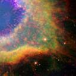
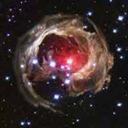
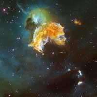
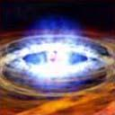
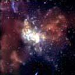
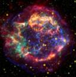

Stars
Stars are the most widely recognized astronomical objects, and represent the most fundamental building blocks of galaxies.
The age, distribution, and composition of the stars in a galaxy trace the history, dynamics, and evolution of that galaxy. Moreover, stars are responsible for the manufacture and distribution of heavy elements such as carbon, nitrogen, and oxygen, and their characteristics are intimately tied to the characteristics of the planetary systems that may coalesce about them.
Star Formation
Stars are born within the clouds of dust and scattered throughout most galaxies. A familiar example of such as a dust cloud is the Orion Nebula. Turbulence deep within these clouds gives rise to knots with sufficient mass that the gas and dust can begin to collapse under its own gravitational attraction.
As the cloud collapses, the material at the center begins to heat up. Known as a protostar, it is this hot core at the heart of the collapsing cloud that will one day become a star. Three-dimensional computer models of star formation predict that the spinning clouds of collapsing gas and dust may break up into two or three blobs; this would explain why the majority the stars in the Milky Way are paired or in groups of multiple stars.
Main Sequence Stars
A star the size of our Sun requires about 50 million years to mature from the beginning of the collapse to adulthood. Our Sun will stay in this mature phase (on the main sequence as shown in the Hertzsprung-Russell Diagram) for approximately 10 billion years.
Stars are fueled by the nuclear fusion of hydrogen to form helium deep in their interiors. The outflow of energy from the central regions of the star provides the pressure necessary to keep the star from collapsing under its own weight, and the energy by which it shines.
-
Stars and Their Fates
-  Average Stars Become White Dwarfs
-  White Dwarfs May Become Novae
-  Supernovae Leave Behind Neutron Stars or Black Holes
-  Neutron Stars
-  Black Holes
-  From the Remains, New Stars Arise